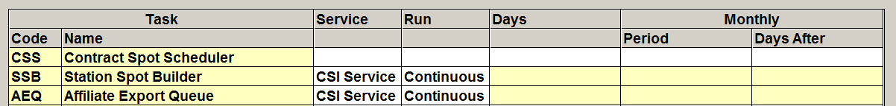

Configuring the Queue
The Affiliate Export Queue runs in the background, checking for exports every 60 seconds.
Three Places to Run the Queue From
The Affiliate Export Queue program can be run from one of the following locations:
- On the server,
- On a dedicated PC other than the server, or
- On a Client PC.
Whichever way it is run, only one image can be running at any time.
Three Methods to Start the Queue
The Affiliate Export Queue program can be started either
- By using the CSI_Server program to run the program and keep it running.
- By using the Windows Task Scheduler program to start it and keep it running.
- By configuring a shortcut that can be used to manually start the program.
We recommend using the CSI_Server program or Windows Task Scheduler because both methods can be configured to automatically restart the Queue should it ever stop.
CSI_Server Method
Add AffiliateExportQueue to the Section names field of the CSI_Server.ini:
Example:
SectionNames = AffiliateExportQueue
Add the section AffiliateExportQueue to the csi_server.ini file, modifying the paths as needed.
[AffiliateExportQueue]
Enabled = 1
WeekDays = 1111111
Interval = 86400
StartTime = 12:00am
MonthDaysToRun =
TimeSlot =
;Enter the location of the program to run
Exe = d:\CSI\Prod\EXE\Affiliateexportqueue.exe
;Enter location of affiliat.ini file
StartInFolder = d:\CSI\Prod\Data
CommandLine =
KeepProgramRunning = 1
With these settings the Queue will run automatically in the background.
Windows Task Scheduler Method
Use the Windows Task Scheduler Wizard to create the task to be run.
Once created, right click on the task and select properties from the pop-up. In the properties window, setup the Start In to reference the folder containing the Affiliat.ini file.
Shortcut Method
Create a shortcut on a PC that will be used to launch the program.
The Target location must point to the AffiliateExportQueue.EXE in the Counterpoint EXE folder
The Start In must point to the location of the affiliate.ini file (generally in the Data folder). Then simply run the Affiliate Export Queue and keep it running in the background.
Monitoring the Export Queue
Use the Task Monitor to monitor the status of the Affiliate Export Queue.
Configure the Affiliate Export Queue with the Service of “CSI Service” or “Task Scheduler” depending on the service used, and set the Run setting to “Continuous” so that it is monitored continuously.
